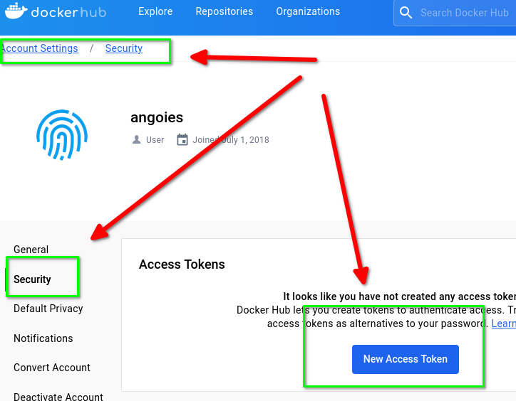
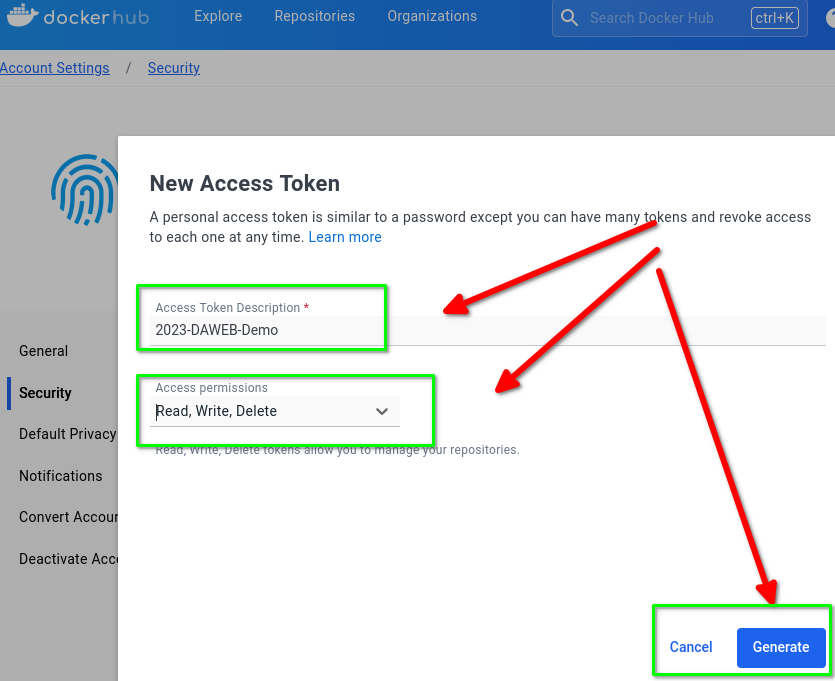
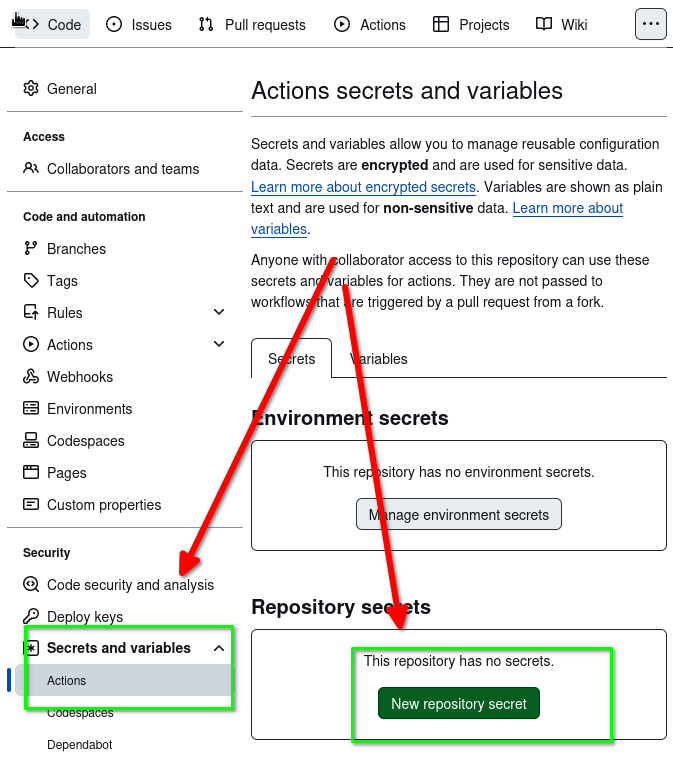
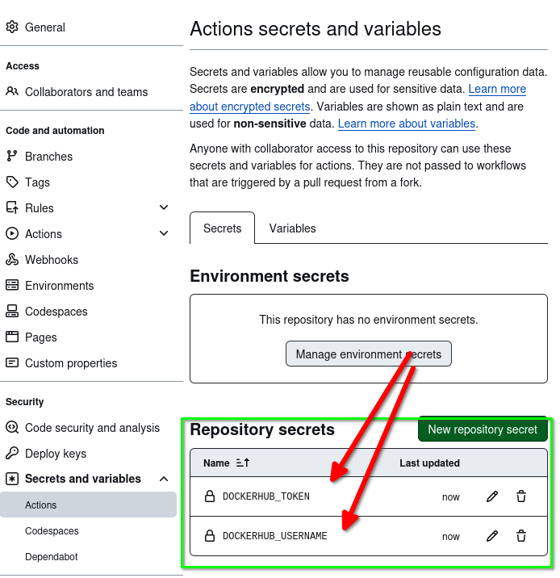

Control de versiones y CI/CD - Parte II¶
1. Introducción¶
Se parte de un aplicación Python sobre Flask. El objetivo es que cambios en el repositorio en Github:
- disparen la creación de una imagen Docker,
- que dicha imagen se actualice en DockerHub,
- y que finalmente se despliegue en AWS.
2. Conociendo la aplicación¶
Aviso: antes de comenzar se recomienda ejecutar estos comandos en la máquina virtual:
$ sudo systemctl restart docker.service $ sudo systemctl restart networking.service
2.1. Prueba en local¶
Para probar la aplicación en local debe:
- Crear un entorno virtual Python
- Activar ese entorno virtual,
- Instalar las dependencias
- Iniciar la aplicación desde el interprete Python.
Estos son los comandos necesarios:
$ python3 -m venv venv
$ source venv/bin/activate
(venv) $ pip install -r requirements.txt
(venv) $ python src/app.py
Puede verificar que la aplicación está funcionando con curl o accediendo con el navegador:
$ curl http://localhost:5000
$ curl http://localhost:5000/status
$ firefox http://localhost:5000 &
En producción es preferible iniciar la aplicación con un servidor como gunicorn. El comando en ese caso sería:
$ gunicorn --chdir src app:app --bind 0.0.0.0:5000
2.2. Creación imagen Docker¶
Se le facilita un fichero Dockerfile para "dockerizar" la aplicación:
# start by pulling the python image
FROM python:3-slim
# switch working directory
WORKDIR /app
# copy the requirements file into the image
COPY ./requirements.txt ./
# install the dependencies and packages in the requirements file
RUN pip install -r requirements.txt
# copy every content from the local file to the image
COPY src .
# configure the container to run in an executed manner
CMD gunicorn --bind 0.0.0.0:5000 app:app
Desde el directorio donde esté el fichero construya la imagen (usando su nombre de usuario en DockerHub para etiquetar la imagen):
(venv) $ ls
Dockerfile README.md requirements.txt src venv
(venv) $ docker build -t <usuariodockerhub>/galeria:latest .
Y ahora puede lanzar la imagen creada para probarla:
(venv) $ docker run -d -p 80:5000 --name testgaleria <usuariodockerhub>/galeria
(venv) $ curl http://localhost/status
(venv) $ firefox http://localhost:80 &
Termine parando y borrando el contenedor:
(venv) $ docker stop testgaleria && docker rm testgaleria
2.3. Prueba imagen en local con compose.yml¶
En este apartado se proporciona un fichero docker-compose.yml para lanzar el servicio (modificando el fichero para indicar su usuario en DockerHub):
services:
galeria:
container_name: galeria
image: <usuariodockerhub>/galeria:latest
ports:
- 80:5000
restart: always
Pruebe con docker compose a iniciar y detener la aplicación:
(venv) $ docker compose up -d
(venv) $ curl http://localhost
(venv) $ firefox http://localhost:80 &
(venv) $ docker compose down
2.4. Subir imagen a dockerhub¶
Suba la imagen a DockerHub para comprobar su usuario, permisos, etc:
(venv) $ docker push <usuariodockerhub>/galeria:latest
3. Actions: build and push¶
Vamos a crear un action que ejecute en GitHub de forma automática los pasos anteriores: construir la imagen y subirla a DockerHub.
3.1. Secretos en GitHub¶
Para este Action se necesita añadir en GitHub los llamados Secrets, que permiten almacenar de forma segura en GitHub el usuario y clave para hacer push a DockerHub.
Actions secrets and variables
Secrets and variables allow you to manage reusable configuration data. Secrets are encrypted and are used for sensitive data. Learn more about encrypted secrets. Variables are shown as plain text and are used for non-sensitive data. Learn more about variables.
Anyone with collaborator access to this repository can use these secrets and variables for actions. They are not passed to workflows that are triggered by a pull request from a fork.
Para más información: Uso de secretos en Acciones de GitHub
El nombre que utilice al crear el secreto en la consola de administración de GitHub será el que debe utilizar en el Action.
En este ejemplo se usan dos secretos:
DOCKERHUB_USERNAME: su usuario en DockerHubDOCKERHUB_TOKEN: un token de acceso que debe generar en DockerHub
Para obtener el token de acceso en DockerHub acceda a su web (Account Settings/Security):


No olvide copiar y guardar el token generado ya que lo va a necesitar para introducirlo en el secreto de GitHub.
3.1.1. Crear el secreto¶
La ruta para crear un secreto en GitHub es Settings del repositorio / Security / Secrets and Variabls / Actions.

Ahora ya puede generar los dos secretos en GitHub. Tras añadirlos debe aparecer algo similar a:

3.2. Crear el Action¶
En este ejemplo el Action que se muestra utiliza otras Actions predefinidas:
actions/checkout: Descarga el código. En términos técnicos, hace un "git checkout" del repositorio y lo coloca dentro del "runner" donde se está ejecutando la acción.docker/login-action: Inicia sesión en un registro de Docker.Es el equivalente a escribir docker login en terminal.docker/build-push-action: crea la imagen a partir del Dockerfile y opcionalmente la sube al registro del paso anterior.
Para acceder a la información almacenada en un secreto se usa la notación ${{ secrets.NOMBRE_DEL_SECRETO }}.
El fichero con el action debe ser similar a este. Puede observar que el Action se dispara con cambios en el directorio src.
name: Docker CI/CD
on:
push:
branches: [ main ]
paths:
- src/**
pull_request:
branches: [ main ]
paths:
- src/**
jobs:
build:
name: build and push Docker image
runs-on: ubuntu-latest
steps:
# 1
- uses: actions/checkout@v4
# 2
- name: Login to DockerHub
uses: docker/login-action@v3
with:
username: ${{ secrets.DOCKERHUB_USERNAME }}
password: ${{ secrets.DOCKERHUB_TOKEN }}
# 3
- name: Build and push Docker image
uses: docker/build-push-action@v5
with:
context: .
push: true
tags: ${{ secrets.DOCKERHUB_USERNAME }}/galeria:latest
Sólo queda probar el fichero. Para ello:
- crear el Action en GitHub.
- crear una rama en local
- modificar algún fichero en el directorio
src, por ejemplo el ficheroindex.htmlpara incluir su nombre y apellidos en eltitlede la página. - hacer un push de esa rama (y usar Pull Request si están activados).
- Comprobar en la pestaña Actions de GitHub los distintos pasos del Action.
- Comprobar que no hay errores y que se ha subido la imagen creada a DockerHub.
4. Action: despliegue en AWS¶
Se puede añadir un nuevo job al action anterior para provocar el despliegue de la nueva imagen en AWS. Para ello será necesario, tras crear la nueva imagen, acceder a la instancia EC2 en AWS y hacer docker compose down y posteriromente docker compose up.
4.1. Secretos necesarios¶
Para ello necesita:
- Una instancia EC2 activa.
- En la instancia EC2 debe estar instalado
docker. - Crear los siguiente secretos en GitHub
AWS_USERNAME: username del adminstrador en la instacia EC2AWS_HOSTNAME: nombre o la IP pública de la instacia EC2AWS_PRIVATEKEY: el fichero de clave de acceso SSH a EC2 (el contenido del ficherovockey.pem)
4.2. Modificar el action¶
Tras la creación de los secretos hay que modificar el Action anterior añadiendo el nuevo job aws. Tenga en cuenta:
- Observe en
awsel valorneeds: buildpara indicar que si el trabajobuildno es correcto no se ejecutaaws. - Se añade el uso de dos Actions prededinidos:
appleboy/scp-actionpara hacerscpdel ficherodocker-compose.ymldel repositorio a EC2. Se utiliza por si hubiera cambios en el fichero de despliegue.appleboy/ssh-actionpara hacerssha EC2 y ejecutar los comandosdocker composenecesarios (se añade una pausa para permitir que DockerHub indexe correctamente la imagen subida).
Para probar añadir al fichero inicial este fragmento:
# ... Cortado
jobs:
build:
# ... Cortado
# código añadido
aws:
name: Deploy image to aws
needs: build
runs-on: ubuntu-latest
steps:
- uses: actions/checkout@v4
# 1
- name: copy docker compose via ssh key
uses: appleboy/scp-action@v0.1.7
with:
host: ${{ secrets.AWS_HOSTNAME }}
username: ${{ secrets.AWS_USERNAME }}
port: 22 # ${{ secrets.PORT }}
key: ${{ secrets.AWS_PRIVATEKEY }}
source: "docker-compose.yml"
target: /home/admin
# 2
- name: script deploy docker services
uses: appleboy/ssh-action@v1.0.3
with:
host: ${{ secrets.AWS_HOSTNAME }}
username: ${{ secrets.AWS_USERNAME }}
key: ${{ secrets.AWS_PRIVATEKEY }}
port: 22 # ${{ secrets.PORT }}
script: |
sleep 60
docker compose down --rmi all
docker compose up -d
4.3. Prueba¶
Basta con volver a modificar el código en el directorio src. Esto dispara la creación de la imagen y si es correcta dispara el trabajo de despliegue en AWS EC2.
5. Anexo: Orden de ejecución en los Actions¶
Tenga en cuenta que:
- Dentro de un
joblosstepsse ejecutan de forma secuencial. - Los
jobsdentro de unworkflowse ejecutan en paralelo. - Los flujos dentro de un repositorio también se ejecutan en paralelo.
Si desea ejecutar proceso en secuencia tenemos dos opciones:
- Action con varios jobs "ecadenados"
- Varios Actions encadenados entre si.
5.1. Action con varios jobs¶
Si desea que un job se ejecuta tras otro debe usar la clave needs: <nombre_job> para indicar que el trabajo no se lanza hasta que nombre_job haya terminado correctamente.
Vea un ejemplo:
jobs:
lint:
name: Lint con Flake 8
runs-on: ubuntu-latest
steps:
### pasos de lint
build:
name: Docker build and push
runs-on: ubuntu-latest
needs: lint ## depende del job lint
steps:
### pasos del docker build and push
aws:
name: Deploy image to aws
runs-on: ubuntu-latest
needs: build
steps:
### apsos del deploy
5.2. Varios Actions¶
Si tiene varios ficheros con workflows y desea ejecutarlos en un orden específico puedes utilizar la clave workflow_run. Esta permite desencadenar un flujo de trabajo basado en el éxito o fracaso de otro.
Si por ejemplo tiene tres ficheros lint.yml, test.ymly deploy.yml y los quiere ejecutar en ese orden los ficheros serían similares a:
# Archivo lint.yml, NO SE AÑADE NADA
name: Lint # Nombre del flujo, se usa en test.yml
on:
push:
branches:
- main
jobs:
lint:
runs-on: ubuntu-latest
steps:
- name: Lint the code
run: echo "Running lint checks"
En el fichero test.yml añadimos la dependencia del flujo de nombre Lint
# En el archivo test.yml
name: Test # Nombre del flujo, se usa en deploy.yml
on:
workflow_run:
workflows:
- Lint # Flujo del que depende
types:
- completed
jobs:
test:
runs-on: ubuntu-latest
steps:
- name: Run tests
run: echo "Running tests"
Y en el fichero deploy.yml añadimos la dependencia del flujo de nombre Test:
# En el archivo deploy.yml
name: Deploy
on:
workflow_run:
workflows:
- Test # Flujo del que depende
types:
- completed
jobs:
deploy:
runs-on: ubuntu-latest
steps:
- name: Deploy
run: echo "Deploying"